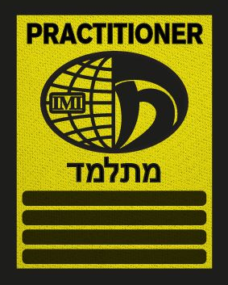

Agnieszka Daniel
Asystentka instruktora | Stopień P4
W pierwszych zajęciach z Krav Magi wzięła udział w 2011 roku i już wtedy uważała, że jest to jeden z najlepszych systemów obrony dla kobiet. Regularne treningi rozpoczęła od roku 2021. Realne sytuacje i proste rozwiązania, które kobieta może wykonać nawet z dużo większym i silniejszym przeciwnikiem, stały się jej drogowskazem w instruktorskim podejściu do technik Krav Magi.
Na swoich treningach skupia się na technicznym dopracowaniu technik, przedstawieniu realnych zagrożeń i wskazówek dla kobiet, jak można pokonać wyższych i silniejszych od siebie. Nie zapomina przy tym o dobrej zabawie przy części wydolnościowej i relaksie przy rozciąganiu. Krav Maga jest jej pasją w przekazywaniu uczniom wiedzy technicznej, jak i wyrabianiu „chłodnej głowy”.
Pasjonatka walki nożem i psychologicznych aspektów radzenia sobie ze stresem podczas ataku ze strony dużo wyższego i silniejszego przeciwnika.
Do zobaczenia na treningu! KIDA!